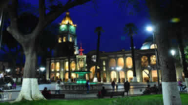

Cochabamba es una ciudad boliviana, capital del departamento homónimo y de la provincia de Cercado.
Se encuentra situada en el centro del país, localizada en el valle del mismo nombre. Será además sede del Parlamento Suramericano

Caminar en medio de la nada. A veces sobre un suelo pálido e interminable, a veces sobre las nubes. El blanco infinito bajo mis pies solo se interrumpe cuando arremete contra el azul del cielo, en la lejanía de un horizonte inacabable y continuo. Entre tanta inmensidad, la soledad es absoluta y el silencio es total. Una gaviota pasa volando sobre mi cabeza para luego darme cuenta de que me hallo sobre una fina capa de agua que refleja todo alrededor. Camino sobre las nubes.